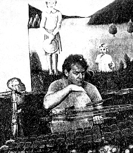

First, ignore the movie
by Marcus Mabry with Rhonda Adams
Newsweek, August 28, 1989

Pop quiz: who wrote the soundtrack to Batman? Prince, right? Wrong. The composer who created most of the haunting music in the film is Danny Elfman of LA's Oingo Boingo. If you've never heard of Elfman, you're not alone. The "soundtrack album" full of Prince's songs has received all the attention, even though his music is played for only about six minutes of the movie. No one's less pleased with the confusion than Elfman, who's talked publicly with entertainment reporters about his gripes. "The word soundtrack has lost its meaning," he says. "A soundtrack used to mean the music in a movie, but it has become, through manipulation of the record industry, the songs in the movie." Elfman's complaints have focused attention on the increasingly profitable--and controversial--business of motion-picture soundtracks. Movie albums used to be little more than afterthoughts and often ended up quickly on remainder shelves. Then, in 1984, 10 of them went platinum. Ever since, record companies have moved aggressively to produce and promote soundtracks. In the process, they often end up selling products that have little to do with the film.
Take the soundtrack for Ghostbusters II. It contains an Elton John song that was composed for the film but never used. Most of the album's songs are played only as the closing credits roll, and only Bobby Brown's "On Our Own" has a key role in the movie. These days songs on a soundtrack are often "source" music:stuff that plays in the background as characters talk in a diner, or on the radio of a passing car. Songs can even be included if they were considered for source music bu tdidn't make the final cut. Music supervisor Peter Afterman and director Ivan Reitman decided that most of the soundtrack music didn't fit, but by then the record company had made promises to the artists. "Looking back, we probabaly shouldn't have had a soundtrack," says Afterman, "but the producer and record company wanted the added promotion of what they thought would be the summer's megahits."
Record companies can also try to have it both ways by releasing a soundtrack and a "score". That's what Warner Bros. Records did. And the move paid off. The Prince record with the big gold Batman logo on the jacket has sold close to 2 million copies and has nestled snugly at No. 1 for the past six weeks. The Elfman score with the Batman emblem reflected in the moon is heading toward gold.
Despite the squabbles, the trend is bound to continue as long as soundtracks keep spinning off profits. The original Dirty Dancing album was so popular that RCA Records released a second one about six months later, even though some songs were barely in the film. With sales of the two albums now at about 24 million, people will probably remember the "source music" to Dirty Dancing long after the movie itself is forgotten.